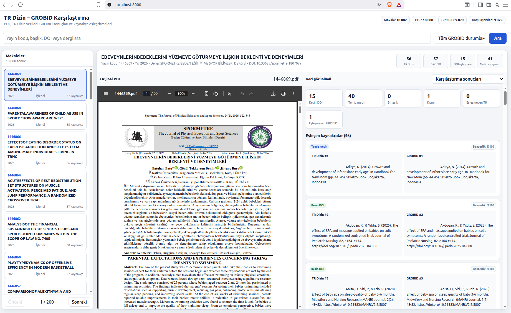

PDF Toplama
TR Dizin servislerinden makale kayıtları alınır ve uygun PDF dosyaları toplu olarak indirilir.
Akademik yayınların PDF dosyalarını indiren, kaynakçalarını GROBID ile çıkaran ve sonuçları TR Dizin verileriyle karşılaştıran Docker tabanlı veri işleme sistemi.
Bu proje, GROBID tarafından akademik PDF dosyalarından çıkarılan kaynakça verilerinin doğruluğunu TR Dizin kayıtlarıyla karşılaştırmalı olarak incelemeyi amaçlar.
TR Dizin servislerinden makale kayıtları alınır ve uygun PDF dosyaları toplu olarak indirilir.
PDF dosyaları GROBID ile işlenerek kaynakçalar yapılandırılmış TEI XML formatına dönüştürülür.
TR Dizin ve GROBID kaynakçaları DOI ve metin benzerliği yöntemleriyle karşılaştırılır.
PDF, ham veriler ve karşılaştırma sonuçları aynı web arayüzü üzerinden incelenebilir.
Arayüzde orijinal PDF, TR Dizin kaynakçaları, GROBID tarafından çıkarılan kaynakçalar ve eşleştirme sonuçları birlikte görüntülenir.
